Automation and New Tasks: How Technology Displaces and Reinstates Labor
This article presents a task-based framework for understanding the effects of automation and further types of technological changes on labor demand and uses it to interpret changes in US employment over the recent past. Additionally, the question of why productivity growth has been so low, while automation has increased in recent years is adressed.
Conceptual Framework
As seen in the figure below, tasks can either be produced with labor or capital (task content of production). On one hand, automation (I) enables some tasks previously performed by labor to be performed by capital. On the other hand, the introduction of new tasks (N) increases the number of tasks performed by labor.
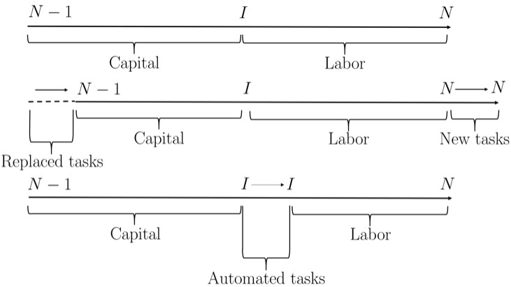
These tasks are the center of this framework and all factors of production (capital and labor) contribute to output by performing these tasks. The output can be depicted as a constant elasticity of the substitution function of capital and labor.
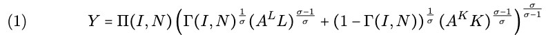
In this canonical model the share parameters are based on automation and new tasks. Γ(I,N) is defined as the share of tasks performed by labor relative to capital and Π(I,N) depicts the total productivity effect. A^L and A^K stand for the labor- and capital-augmenting technical change.
The labor share is a result of the optimization of the canonical model for the marginal costs of capital and labor:
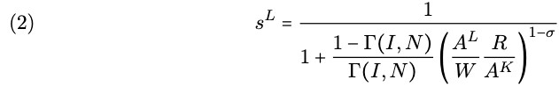
If 0<σ<1 tasks are complements, an increase in wage will increase the labor share sL.
If σ>1 tasks are substitutes, an increase in wage will decrease the labor share sL.
If σ=1 we obtain a Cobb Douglas production function without substitution effect.
The model predicts that, independently from the elasticity of substitution σ, automation (which changes the task content of production against labor) will reduce the labor share in the industry, while new tasks (which alter the task content of production in favor of labor) will increase it.
Technology and Labor Demand
The Wage bill depicts the total amount employers pay for labor:
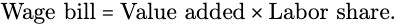
The impact on labor in one sector can be represented as:
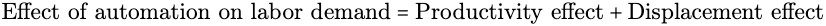
The productivity effect occurs when automation increases value added and thus raises the demand for labor from non-automated tasks. The increased flexibility of allocation of tasks to factors, which is due to automation, leads to higher productivity.
The displacement effect occurs when automation changes the task content of production adversely for labor, thus reducing the labor share.
Productivity gains from automation result from capital and labor becoming more productive or cost-savings obtained from substitution. When wages are high and labor is scarce (abundant), automation will generate a strong (modest) productivity effect and will tend to raise (lower) labor demand. The displacement effect can be counterbalanced by technologies that create new tasks in which labor has a comparative advantage.
The effect of new tasks is defined as:
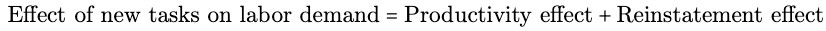
The reinstatement effect occurs when labor is reinstated into a broader range of tasks, thus changing the tasks content of production in favor to labor.
Factor-augmenting technology improvements, mean that either labor or capital becomes more productive in all tasks, making the productivity effect proportional to their share in value added.
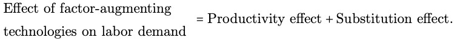
The substitution Effect occurs when the labor share is changed but the task content of production is not altered.
Capital-augmenting technologies always increase labor demand and labor-augmenting technologies do the same for plausible parameter values so long as σ>1-sL.
Task, Production and Aggregate Labor Demand
The wage bill is used to investigate the changes to aggregate labor demand:
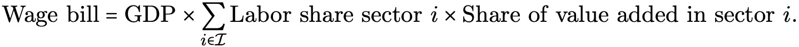
Following the automation in one sector, we have the equation with one additional factor:
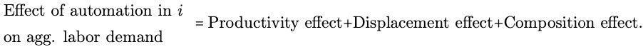
The composition effect captures the implication of sectoral reallocations which can be applied to new tasks. Although they also generate composition effects and may affect aggregate labor demand, factor-augmenting technologies still have no impact on the task content of production. In case of weak composition effects labor demand is affected via the productivity effect.
Sources of Labor Demand Growth in the US
The framework is further used to assess the evolution of labor demand in the United State since World War II and how it applies to the effects presented before.
The change in aggregate wage bill can be broken down as:
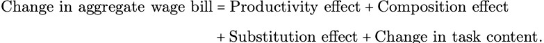
The change in task content describes the residual industry-level change in labor share which cannot be explained by the substitution effect.
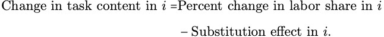
In decomposed data the change in task content captures information on displacement from automation technologies and reinstatement from the introduction of new tasks
Sources of Labor Demand
1947-1987
Labor share in manufacturing and services increased modestly in contrast to a rapid and steady growth of the wage bill, which can be explained by the productivity effect. All other effects remain irrelevant except the displacement and reinstatement effect (Figure 3). This period is characterized by automation accompanied by introduction of new tasks counterbalancing the negative consequences.
1987-2017
A slowdown in growth of labor demand occurs due to a weaker-than usual-productivity growth and relevant shifts in the task content of production against labor (Figure 5). Furthermore, manufacturing had a weaker reinstatement effect and slower growth of productivity than in previous decades. In contrast to the period of 1947-1987, the technological change is driving out labor.
Conclusion
The task-based framework studied the effects of different technologies on labor demand with task content of production at its center. Automation creates a displacement effect, while the introduction of new tasks leads to a reinstatement effect. Those effects can be seen in the recent stagnation of labor demand marked by high automation, low creation of new tasks and a slowdown in productivity growth. The implications are that if automation remains the driver of productivity growth, the relative standing labor and task content of production will decrease. Finally, the creation of new tasks will be essential for increasing the productivity growth.
Photo from: Unsplash
Original Article: Acemoglu, Daron and Pascual Restrepo (2019): “Automation and New Tasks: How Technology Displaces and Reinstates Labor”, Journal of Economic Perspectives, 33(2), pp. 3-30.